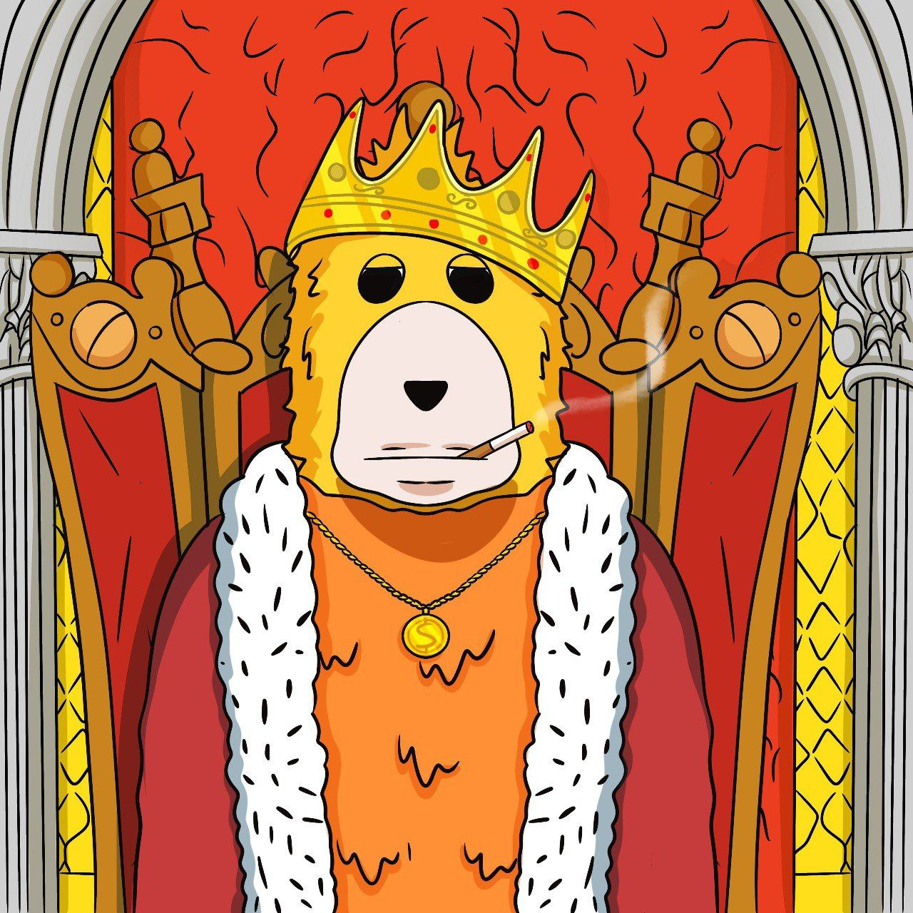

About Larry Dopestar
Larry Dopestar ain’t your average puppet. Inspired by the legends from The Muppet Show, he took a sharp turn into the wild
side. Once a sweet lil’ star for kids' shows, Larry got bored of the same old scripts and cameras. He ditched the set,
grabbed a drink, and started throwing the craziest parties the degen world has ever seen. His motto? "Life’s a party,
and I’m the DJ!"
Larry Mission
Larry’s all about taking crypto vibes to the moon, one party at a time. He’s building the ultimate degen rave culture,
where every night feels like a green candle. Bear market? Nah, fam, not with $Larry around. His mission: make every
degen believe in the moon again.
The party King on Solana
Larry once thrived under the dazzling spotlight of fame as one of the most beloved and quirky puppets of his generation.
Celebrated for his charm and infectious energy, he was a rising star in the entertainment world, adored by fans
worldwide. But as time passed, the industry that had embraced him began to move on, leaving Larry in the shadows.
Forgotten and discarded, he sank into a deep depression, struggling with feelings of abandonment and an overwhelming
longing to relive the glory days of his past.
Just when it seemed all hope was lost, Larry stumbled upon a new phenomenon lighting up the internet: memecoins. These
wild, unpredictable digital currencies, fueled by internet culture and viral trends, were the perfect opportunity for
Larry to stage an epic comeback. Determined to reclaim his fame, Larry threw himself into the world of crypto, launching
his very own memecoin, $LARRY, with unshakable confidence and grand ambitions.
